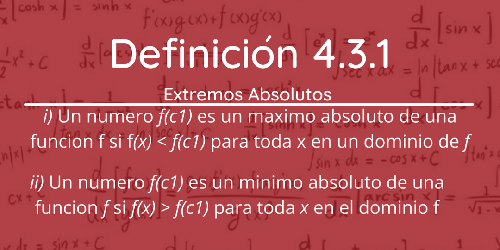
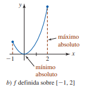
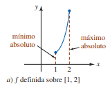
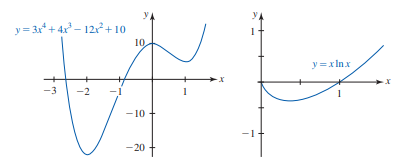
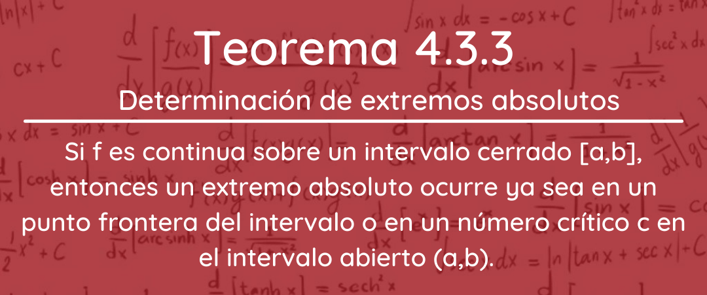

4.3 Extremos De Funciones
Los máximos y mínimos de una función, conocidos colectivamente como extremos de una función, son los valores más grandes (máximos) o más pequeños (mínimos), que toma una función en un punto situado ya sea dentro de una región en particular de la curva (extremo local o relativo) o en el dominio de la función en su totalidad (extremo global o absoluto).
 o 

¿Cómo se encuentran los extremos de una función?
Incluso cuando tenemos gráficas, para la mayor parte de las funciones la coordenada x en que ocurre un extremo no es evidente. Con ayuda de la herramienta para acercar o alejar una página de un dispositivo para graficar, es posible buscar y, por supuesto, aproximar tanto la ubicación, como el valor de un extremo.

Teorema 4.3.2
Demostración
Suponga que f(c) es un exremo relativo.
i) si f'(c) no existe, entonces, por la definición 4.3.3 c es un número crítico.
ii) si f'(c) existe, entonces hay tres posibilidades: f'(c) > 0, f'(c) < 0 o f'(c) = 0 . Para ahorrar argumentos, también se pondrá que f(c) es un máximo relativo. Así, por la
definición 4.3.2 hay algún intervalo abierto que contiene a c donde
4.3.1 Extremos de Funciones definidos sobre un intervalo cerrado

Una función que es continua sobre un intervalo cerrado tiene tanto como máximo absoluto el teorema de determinación de extremos absolutos.
Directrices para encontrar extremos sobre un intervalo cerrado
i) Evalúe f en los puntos frontera a y b del intervalo [a,b].
ii) Encuentre todos los números críticos c1, c2 ...,cn en el intervalo abierto (a,b).
iii) Evalúe f en todos los números críticos.
iv) Los valores mayor y menor en la lista
f(a), f(c1), f)c2)....f(cn),f(b);
Son el máximo absoluto y el mínimo absoluto, respectivamente, de f sobre el intervalo [a,b].